지적기사 (2021-05-15 기출문제)
1과목: 지적측량
1. 경위의측량방법으로 세부측량을 하였을 때 측량대상 토지의 경계점 간 실측거리와 경계점의 좌표에 따라 계산한 거리의 교차기준은? (단, L은 실측거리로서 미터단위로 표시한 수치를 말한다.)
 센티미터 이내
센티미터 이내 센티미터 이내
센티미터 이내 센티미터 이내
센티미터 이내 센티미터 이내
센티미터 이내
(정답률: 77%)

2. 지적삼각점성과표에 기록ㆍ관리하여야 하는 사항이 아닌 것은?
- 부호 및 위치의 약도
- 소재지와 측량연월일
- 시준점의 명칭, 방위각 및 거리
- 지적삼각점의 명칭과 기준 원점명
(정답률: 61%)
3. 다각망도선법에 따른 지적도근점측량에 대한 설명으로 옳은 것은?
- 1도선의 점의 수는 최대 40점 이하로 한다.
- 각 도선의 교점은 지적도근점의 번호 앞에 ‘교점’자를 붙인다.
- 3점 이상의 기지점을 포함한 결합다각방식에 따른다.
- 영구표지를 설치하지 않는 경우, 지적도근점의 번호는 시ㆍ군ㆍ구별로 부여한다.
(정답률: 70%)
4. 어떤 도선측량에서 변장거리 800m, 측점 8점, △x의 폐합차 7cm, △y의 폐합차 6cm의 결과를 얻었다. 이때 정도를 구하는 올바른 식은?
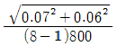
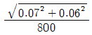
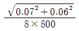
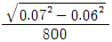
(정답률: 56%)
5. 다음 중 지적도근점측량에서 지적도근점을 구성하는 도선의 형태에 해당하지 않는 것은?
- 개방도선
- 결합도선
- 폐합도선
- 다각망도선
(정답률: 80%)
6. 지적삼각측량에서 진북방향각의 계산단위로 옳은 것은?
- 초 아래 1자리
- 초 아래 2자리
- 초 아래 3자리
- 초 아래 4자리
(정답률: 76%)
7. 우리나라 직각좌표계의 원점축척계수로 옳은 것은?
- 0.9996
- 0.9997
- 0.9999
- 1.0000
(정답률: 76%)
8. 지적삼각점 간 거리가 2.5km에서 각도 오차가 1‘20“가 발행되었다면 위치 오차는?
- 0.3m
- 0.5m
- 1.0m
- 1.4m
(정답률: 49%)
9. 지각삼각보조점표지의 점간거리 기준으로 옳은 것은? (단, 다각망도선법에 따르는 경우다.)
- 평균 2km 이상 5km 이하
- 평균 1km 이상 3km 이하
- 평균 0.5km 이상 1km 이하
- 평균 0.3km 이상 5km 이하
(정답률: 56%)
10. 평판측량방법으로 세부측량을 할 때에 지적도, 임야도에 따라 작성하는 측량 준비 파일에 포함시켜야 할 사항이 아닌 것은?
- 인근 토지의 경계선ㆍ지번 및 지목
- 측량대상 토지의 경계선ㆍ지번 및 지목
- 지적기준점 간의 거리, 지적기준점의 좌표
- 지적기준점 간의 방위각 및 경계점간 계산거리
(정답률: 38%)
11. 전파기 또는 광파기측량방법에 따라 다각망도선법으로 지적삼각보조점측량을 할 때 기지점과 교점을 포함하여 1도선의 거리는 얼마 이하로 하여야 하는가?
- 20점 이하
- 10점 이하
- 15점 이하
- 5점 이하
(정답률: 49%)
12. UTM좌표계에 대한 설명으로 옳은 것은?
- 종선좌표의 원점은 위도 38°선이다.
- 중앙자오선에서 멀수록 축척계수는 작아진다.
- 우리나라는 UTM좌표를 53, 54 종대에 속해있다.
- UTM투영은 적도선을 따라 6°간격으로 이루어진다.
(정답률: 44%)
13. 지적도 및 임야도에 등록하는 도곽선의 용도가 아닌 것은?
- 토지경계의 측정기준
- 도곽신축량의 측정기준
- 인접도면과의 접합기준
- 지적측량 기준점 전개시의 기준
(정답률: 40%)
14. 지적기준점을 19점 설치하여 측량하는 경우 측량기간으로 옳은 것은?
- 4일
- 5일
- 6일
- 7일
(정답률: 65%)
15. 데오도라이트의 기계오차 중 수평각 관측 시 고려하지 않아도 되는 것은?
- 기포관조정
- 수평축의 조정
- 십자선 종선의 조정
- 망원경 수준기의 조정
(정답률: 55%)
16. 거리측량을 할 때 발생하는 오차 중 우연오차의 원인이 아닌 것은?
- 테이프의 길이가 표준길이와 다를 때
- 온도가 측정 중 시시각각으로 변할 때
- 눈금의 끝수를 정확히 읽을 수 없을 때
- 측정 중 장력을 확보하기 곤란할 때
(정답률: 57%)
17. 조준의(앨리데이드)가 갖추어야 할 조건으로 틀린 것은?
- 시준판의 눈금은 정확하여야 한다.
- 기포관 축은 자의 밑면과 평행이어야 한다.
- 시준면은 조준의의 밑면에 직교되어야 한다.
- 시준판을 세웠을 때 밑면에 평행하여야 한다.
(정답률: 53%)
18. A점의 좌표가(1000.00, 1000.00)이고 AP의 방위각이 60°00’00”, AP의 거리가 3000m일 때 P점의 좌표는? (단, 좌표의 단위는 m이다.)
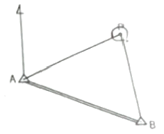
- (1500.00, 1000.00)
- (2476.89, 2611.29)
- (2500.00, 3598.08)
- (3611.28, 3611.09)
(정답률: 60%)
19. α=58°40‘50“,
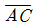
=64.85m,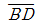
=59.60m인 아래 도형의 면적은?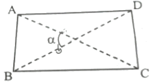
- 1650.9m2
- 18⑤.4m2
- 1950.9m2
- 20⑤.4m2
(정답률: 46%)
20. 지적삼각점측량을 할 때 사용하고자 하는 삼각점의 변동 유무를 확인하는 기준은?
- 기지각과의 오차가 ± 30초 이내
- 기지각과의 오차가 ± 40초 이내
- 기지각과의 오차가 ± 50초 이내
- 기지각과의 오차가 ± 60초 이내
(정답률: 70%)
2과목: 응용측량
21. 지형도에서 92m 등고선 상의 A점과 118m 등고선 상의 B점 사이에 기울기가 8%로 일정한 도로를 만들었을 때, AB 사이 도로의 실제 경사거리는?
- 347m
- 339m
- 332m
- 326m
(정답률: 49%)
22. GNSS 측량에서 다중경로오차가 발생할 가능성이 가장 큰 곳은?
- 사막
- 수중
- 지하
- 건물 옆
(정답률: 65%)
23. 궤도간격 1.067m인 철도에서 곡선반지름이 5000m인 곡선궤도를 속도 100km/h로 주행할 경우에 캔트(cant)의 높이는? (단, 중력가속도 g=9.8m/s2)
- 17mm
- 25mm
- 31mm
- 60mm
(정답률: 24%)
24. 수준 측량시 중간시가 많은 경우 가장 편리한 야장 기입 방법은?
- 기고식
- 고차식
- 승강식
- 기준면식
(정답률: 61%)
25. 회전주기가 일정한 위성을 이용한 원격탐사의 특징으로 틀린 것은?
- 짧은 시간에 넓은 지역을 동시에 측정할 수 있으며 반복측정이 주기적으로 가능하여 대상물의 변화를 감지할 수 있다.
- 다중파장대에 의한 지구표면의 다양한 정보의 취득이 용이하며 관측 자료가 수치로 기록되어 판독에 있어서 자동적인 작업수행이 가능하고 정량화하기 쉽다.
- 관측이 넓은 시야각으로 행해지므로 얻어진 영상은 중심투영에 가깝다.
- 탐사된 자료가 즉시 이용될 수 있으며 재해 및 환경문제의 해결에 유용하게 이용될 수 있다.
(정답률: 30%)
26. 클로소이드 곡선에 대한 설명으로 옳지 않은 것은?
- 클로소이드형식에는 기본형, S형, 나선형, 복합형 등이 있다.
- 모든 클로소이드는 닮은 꼴이다.
- 단위 클로소이드의 모든 요소들은 단위가 없다.
- 매개변수(A)에 의해 클로소이드의 크기가 정해진다.
(정답률: 57%)
27. 수직 터널에 의하여 지상과 지하의 측량을 연결할 때의 수선측량에 대한 설명으로 틀린 것은?
- 깊은 수직 터널에 내리는 추는 50~60kg 정도의 추를 사용할 수 있다.
- 추를 드리울 때, 깊은 수직 터널에서는 보통 피아노선이 이용된다.
- 수직 터널 밑에는 물이나 기름을 담은 물통을 설치하고 내린 추가 그 물통 속에서 동요하지 않게 한다.
- 수직 터널 밑에서 수선의 위치를 결정하는 데는 수선이 완전 정지하는 것을 기다린 후 1회 관측값으로 결정한다.
(정답률: 50%)
28. 축척 1:25000의 항공사진을 200km/h로 촬영한 경우에 최장노출시간이 1/100초였다면 사진에서 허용 흔들림량은?
- 0.002mm
- 0.02mm
- 0.2mm
- 2mm
(정답률: 45%)
29. 영상정합의 종류에서 객체의 점, 선, 면의 밝기값 등을 이용하는 정합은?
- 단순 정합
- 관계형 정합
- 형상 기준 정합
- 영역 기준 정합
(정답률: 25%)
30. 원곡선의 설치에서 곡선반지름이 150m, 시단현에 의한 편각은?(오류 신고가 접수된 문제입니다. 반드시 정답과 해설을 확인하시기 바랍니다.)
- 2°6’ 35”
- 2°51‘ 53“
- 3°44’ 35”
- 5°44‘ 53“
(정답률: 29%)
31. 터널 안에서 A점의 좌표가 (1749.0, 1134.0, 126.9), B점의 좌표가 (2419.0, 987.0, 149.4)일 때 A, B점을 연결하는 터널을 굴진하는 경우 이 터널의 경사거리는? (단, 좌표의 단위는 m이다.)
- 685.94m
- 686.19m
- 686.31m
- 686.57m
(정답률: 41%)
32. 축척 1:50000 지형도에서 주곡선의 간격은?
- 5m
- 10m
- 20m
- 100m
(정답률: 54%)
33. A, B 두 개의 수준점에서 P점을 관측한 결과가 표와 같을 때 P점의 최확값은?
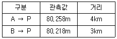
- 80.235m
- 80.238m
- 80.240m
- 80.258m
(정답률: 47%)
34. GNSS 측량방법 중 후처리 방식이 아닌 것은?
- Static 방법
- Kinematic 방법
- Pseudo-Kinematic 방법
- Real-Time Kinematic 방법
(정답률: 40%)
35. 원곡선에서 교각(I)이 90°일 때, 외할(E)이 25m라고 하면 곡선 반지름은?
- 35.6 m
- 46.2 m
- 60.4 m
- 93.7 m
(정답률: 49%)
36. 레벨의 시준축이 기포관축과 평행하지 않으므로 인한 오차를 소거하는 방법으로 옳은 것은?
- 후시한 후 곧바로 전시한다.
- 전시와 후시의 거리를 같게 한다.
- 표척을 정확히 수직으로 세운다.
- 표척을 시준선의 좌우로 약간 기울인다.
(정답률: 60%)
37. GPS를 구성하는 위성의 궤도 주기로 옳은 것은?
- 약 6시간
- 약 12시간
- 약 18시간
- 약 24시간
(정답률: 59%)
38. 지형이 표시 방법이 아닌 것은?
- 평행선법
- 점고법
- 등고선법
- 우모법
(정답률: 63%)
39. 카메라의 초점거리가 153mm, 촬영 경사각이 4.5°로 평지를 촬영한 항공사진이 있다. 이 사진에서 등각점과 주점의 거리는?
- 5.4 mm
- 5.2 mm
- 6.0 mm
- 3.6 mm
(정답률: 32%)
40. 지물과 지모의 대상으로 짝지어진 것으로 옳은 것은?
- 지물 : 산정, 평야, 구름, 계곡
- 지모 : 수로, 계곡, 평야, 도로
- 지물 : 교량, 평야, 수로, 도로
- 지모 : 산정, 구름, 계곡, 평야
(정답률: 46%)
3과목: 토지정보체계론
41. 지적전산자료의 이용 및 활용에 관한 사항으로 틀린 것은?
- 지적공부의 형식으로는 복사할 수 없다.
- 필요한 최소한도 안에서 신청하여야 한다.
- 지적파일 자체를 제공하라고 신청할 수는 없다.
- 승인받은 자료의 이용ㆍ활용에 관한 사용료는 무료이다.
(정답률: 57%)
42. 다음 중 지형 및 공간과 관련된 모든 종류의 공간자료들을 서로 호환이 가능하도록 하기 위하여 만들어진 대표적인 교환표준은?
- SPPS
- SDTS
- GIST
- NIST
(정답률: 63%)
43. 도형정보의 입력 방법 중 디지타이징 방식에 비하여 스케닝 방식이 갖는 특징으로 옳지 않은 것은?
- 특정 주제만을 선택하여 입력시킬 수 없다.
- 레이어별로 나뉘어져 입력되므로 비용이 저렴하다.
- 복잡한 도면을 입력할 경우에 작업시간이 단축된다.
- 손상된 도면의 경우 스캐닝에 의한 인식이 원활하지 못할 수 있다.
(정답률: 49%)
44. 시ㆍ군ㆍ구(자치구가 아닌 구 포함) 단위의 지적공부에 관한 전산자료의 이용 및 활용에 관한 승인권자로 옳은 것은?
- 지적소관청
- 시ㆍ도지사 또는 지적소관청
- 국토교통부장관 또는 시ㆍ도지사
- 국토교통부장관, 시ㆍ도지사 또는 지적소관청
(정답률: 45%)
45. GIS의 일반적 작업순서로 옳은 것은?
- 실세계→데이터수집→DB구축→분석→결과도출→사용자
- 실세계→DB구축→데이터수집→분석→결과도출→사용자
- 실세계→분석→DB구축→데이터수집→결과도출→사용자
- 실세계→데이터수집→분석→DB구축→결과도출→사용자
(정답률: 42%)
46. 토지정보체계에서 차원이 다른 공간객체는?
- 노드
- 링크
- 아크
- 체인
(정답률: 42%)
47. 데이터베이스의 모형 중 트리(Tree) 형태의 구조로 행정구역을 나타내는 레이어 등에 효율적으로 적용될 수 있는 것은?
- 계급형
- 관계형
- 관망형
- 평면형
(정답률: 46%)
48. 기존 종이지적도면을 스캐닝 방식으로 입력할 경우, 격자영상에 생긴 잡음(noise)을 제거하는 단계는?
- 스캐닝 단계
- 필터링 단계
- 위상정립 단계
- 세선화(thinning) 단계
(정답률: 59%)
49. 데이터 처리 시 대상물이 두 개의 유사한 색조나 색깔을 가지고 있는 경우 소프트웨어적으로 구별하기 어려워서 발생되는 오류는?
- 선의 단절
- 방향의 혼돈
- 불분명한 경계
- 주기와 대상물의 혼돈
(정답률: 57%)
50. 3차원 지적정보를 구축할 때, 지상 건축물의 권리관계 등록과 가장 밀접한 관련성을 가지는 도형정보는?
- 수치지도
- 층별권원도
- 토지피복도
- 토지이용계획도
(정답률: 53%)
51. 제5차 국가공간정보정책 기본계획의 계획기간으로 옳은 것은?
- 20⑤년~2010년
- 2010년~2015년
- 2013년~2017년
- 2014년~2019년
(정답률: 38%)
52. 지리정보데이터 교환표준은 각 국가마다 상이하다. 세계 각국의 데이터 교환 표준이 서로 잘못 연결된 것은?
- 한국 - GXF
- 미국 - SDTS
- NATO 국가 - DIGEST
- 유럽 교통관련 표준 – GDF
(정답률: 46%)
53. 데이터베이스관리시스템(DBMS)의 주요기능에 대한 설명으로 틀린 것은?
- 데이터를 안정적으로 관리한다.
- 하드디스크에 매체를 저장할 수 있다.
- 데이트에 대한 효율적인 검색을 지원한다.
- 각종 데이터베이스의 질의 언어를 지원한다.
(정답률: 52%)
54. 지적측량성과작성시스템에서 지적측량접수프로그램을 이용하여 작성된 측량성과 검사요청서 파일 포맷 형식으로 옳은 것은?
- *.jsg
- *.srf
- *.sif
- *.cif
(정답률: 42%)
55. 다음 중 공간데이터 모델링 과정에 포함되지 않는 것은?
- 개념적 모델링
- 논리적 모델링
- 물리적 모델링
- 위상적 모델링
(정답률: 42%)
56. 다음 중 벡터데이터의 위상 구조에 대한 설명으로 옳지 않은 것은?
- 다양한 공간분석을 가능하게 해주는 구조다.
- 지형ㆍ지물들 간의 공간관계를 인식할 수 있다.
- 데이터이 갱신 시 위상 구조는 신경 쓰지 않아도 된다.
- 다중연결을 통하여 각 지형ㆍ지물은 다른 지형ㆍ지물과 연결될 수 있다.
(정답률: 61%)
57. 다음 중 OGC(Open GIS Consortium)에 관한 설명으로 옳지 않은 것은?
- 지리정보와 관련된 여러 처리방식에 대하여 개방형 시스템적인 접근을 시도하였다.
- 지리정보를 활용하고 관련 응용분야를 주요업무로 하는 공공기관 및 민간기관들로 구성된 컨소시엄이다.
- ISO/TC211의 활동이 시작되기 이전에 미국의 표준화 기구를 중심으로 추진된 지리정보 표준화 기구이다.
- OGIS(Open Geodata Interoperability Specification)를 개발하고 추진하는데 필요한 합의된 절차를 정립할 목적으로 설립되었다.
(정답률: 41%)
58. 시설물관리를 위한 수치지도를 바탕으로 건축, 전기, 설비, 통신, 가스, 도로 등의 위치 정보를 데이터베이스로 구축하고 공간데이터와 연관되는 속성자료를 입력하여 시설물에 대한 유지보수 활동을 효과적으로 지원할 수 있는 체계는 무엇인가?
- FM
- ITS
- UGIS
- Telematics
(정답률: 51%)
59. 캐나다의 지적제도와 지적공부 전산화 과정에 대한 설명으로 옳지 않은 것은?
- 캐나다의 국립지리원(Ordnance Survey)은 1971년 설립되었으며 대축척 수치지도를 작성한다.
- ‘GeoConnections’은 캐나다 지리정보체계를 인터넷상에서 활용할 수 있도록 하기 위해 개발한 프로그램이다.
- GEONet은 캐나다와 세계적인 지리와 지구관측 상품과 서비스에 대한 정보를 포함한다.
- 지리정보관계기관 위원회는 14개의 연방주처와 민간분야 관련 산업 협의회와 학계로 구성된다.
(정답률: 40%)
60. 개인이나 기업이 직접 지적소관청을 방문하지 않고, 원하는 시간에 인터넷 상에서 민원을 처리할 수 있도록 개발된 토지정보시스템은?
- GIS
- PIS
- OGC
- WEB LIS
(정답률: 56%)
4과목: 지적학
61. 다목적 지적제도에서의 토지등록 사항으로 보기 어려운 것은?
- 지하시설물
- 지상 건축물
- 토지의 위치
- 당해 토지의 상속권
(정답률: 59%)
62. 토지조사사업 당시 소유자는 같으나 지목이 상이하여 별필(別筆)로 해야 하는 토지들의 경계선과 소유자를 알 수 없는 토지와의 구획선으로 옳은 것은?
- 강계선(彊界線)
- 경계선(境界線)
- 지세선(地勢線)
- 지역선(地域線)
(정답률: 53%)
63. 일필지의 경계설정 방법이 아닌 것은?
- 보완설
- 분급설
- 점유설
- 평분설
(정답률: 42%)
64. 지적재조사사업 추진을 위한 구체적인 기본계획이 최초로 수립된 시기는?
- 1992년
- 1995년
- 1997년
- 2000년
(정답률: 45%)
65. 지적을 아래와 같이 정의한 학자는?
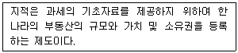
- A. Toffler
- G. McEntyre
- S. R. Simpson
- Henessen, J. L. G.
(정답률: 50%)
66. 지적제도의 외부요소에 속하지 않는 것은?
- 교육적 요소
- 법률적 요소
- 사회적 요소
- 지리적 요소
(정답률: 59%)
67. 지적공부에 원칙적으로 등록할 수 없는 토지는?
- 간석지
- 해안 빈지
- 하천 포락지
- 해안 방풍림
(정답률: 35%)
68. 임야조사사업에 대한 설명으로 틀린 것은?
- 조사 및 측량기관은 부 또는 면이다.
- 임야조사사업 당시 사정의 대상은 소유자 및 경계이다.
- 토지조사에서 제외된 임야 등의 토지에 대한 행정처분이다.
- 사정권자는 지방토지조사위원회의 자문을 받아 당시 토지조사국장이 실시하였다.
(정답률: 59%)
69. 토지조사사업 당시 지번의 설정을 생략한 지목은?
- 성첩
- 임야
- 지소
- 잡종지
(정답률: 35%)
70. 고구려의 토지 면적 측정에 관한 설명으로 틀린 것은?
- 토지의 면적 단위는 경무법을 사용하였다.
- 면적의 단위로 ‘정, 단, 무, 보’를 사용하였다.
- 구고장은 측량에 따른 계산에 관한 문제를 다루었다.
- 방전장은 주로 논이나 밭의 넓이를 계산하였다.
(정답률: 54%)
71. 지목의 설정 원칙으로 옳지 않은 것은?
- 용도경중의 원칙
- 일시변경의 원칙
- 주지목추종의 원칙
- 사용목적추종의 원칙
(정답률: 62%)
72. 토지조사사업 당시 재결한 경계의 효력발생 시기는?
- 재결일
- 재결확정일
- 재결서 접수일
- 사정일에 소급
(정답률: 50%)
73. 백문매매에 대한 설명으로 옳은 것은?
- 오늘날의 토지대장에 해당한다.
- 입안을 받지 않은 계약서를 말한다.
- 구문기에서 소유자란이 없는 것을 뜻한다.
- 조선건국 초기에 성행되었던 토지등기제도의 일종이다.
(정답률: 55%)
74. 지적공부에 대한 설명으로 옳은 것은?
- 토지대장은 국가가 작성하여 비치하는 공적장부를 말한다.
- 경계점좌표등록부는 지적공부에 해당되지 않는다.
- 지적공부 중 대장에 해당되는 것은 토지대장, 임야대장만을 말한다.
- 지적공부 중 도면에 해당되는 것은 지적도, 임야도, 도시계획도를 말한다.
(정답률: 45%)
75. 우리나라 지적제도에 토지대장과 임야대장이 2원적(二元的)으로 있게 된 가장 큰 이유는?
- 측량기술이 보급되지 않았기 때문이다.
- 삼각측량에 시일이 너무 많이 소요되었기 때문이다.
- 토지나 임야의 소유권 제도가 확립되지 않았기 때문이다.
- 우리나라의 지적제도가 조사사업별 구분에 의하여 하였기 때문이다.
(정답률: 59%)
76. 토지등록제도 중 모든 토지를 공부에 강제등록시키는 제도를 취하지 않는 나라는?
- 스위스
- 프랑스
- 네덜란드
- 오스트리아
(정답률: 32%)
77. 다음 중 최초로 부동산(토지) 등기부를 작성할 때 등기 내용을 확인하는 기초 장부로 사용하였던 것은?
- 재결조서
- 토지대장
- 토지조사부
- 토지가옥증명부
(정답률: 42%)
78. 지적은 지형, 지질 또는 국유, 민유 등 소유관계에 구애됨이 없이 어떤 객체를 대상으로 하는가?
- 공부
- 등록
- 지물
- 필지
(정답률: 63%)
79. 아래 내용이 의미하는 토지등록 제도는?
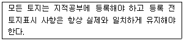
- 권원등록제도
- 소극적 등록제도
- 적극적 등록제도
- 날인증서 등록제도
(정답률: 60%)
80. 우리나라 토지소유권 보장제도의 변천순서를 올바르게 나열한 것은?
- 입안제도→지계제도→증명제도
- 입안제도→증명제도→지계제도
- 증명제도→지계제도→입안제도
- 지계제도→증명제도→입안제도
(정답률: 59%)
5과목: 지적관계법규
81. 공간정보의 구축 및 관리 등에 관한 법률상 양벌규정에 해당행위가 아닌 것은? (단, 법인 또는 개인기 그 위반행위를 방지하기 위하여 해당 업무에 관하여 상당한 주의와 감독을 게을리하지 아니한 경우는 고려하지 않는다.)
- 고의로 측량성과를 사실과 다르게 한 자
- 둘 이상의 측량업자에게 소속된 측량기술자
- 직계 존속ㆍ비속이 소유한 토지에 대한 지적측량을 한 자
- 측량업자로서 속임수, 위력(威力), 그 밖의 방법으로 측량업과 관련된 입찰의 공정성을 해친 자
(정답률: 41%)
82. 성능검사대행자의 등록을 1년 이내의 기간을 정하여 업무정지 처분을 할 수 있는 경우가 아닌 것은?
- 등록사항 변경신고를 하지 아니한 경우
- 정당한 사유 없이 성능검사를 거부하거나 기피한 경우
- 업무정지시간 중에 계속하여 성능검사대행 업무를 한 경우
- 다른 행정기관이 관계 법령에 따라 등록취소 또는 업무정지를 요구한 경우
(정답률: 32%)
83. 시장, 군수가 도시ㆍ군관리 계획을 입안하고자 할 때 기초조사 사항이 아닌 것은?
- 재해의 발생현황 및 추이
- 토지이용상황 및 지가 변동 상황
- 기반시설 및 주거수준의 현황과 전망
- 기후ㆍ지형ㆍ자원ㆍ생태 등 자연적 여건
(정답률: 25%)
84. 다음 중 토지의 이동 신청ㆍ신고 기간이 잘못 연결된 것은?
- 등록전환: 그 사유가 발생한 날부터 60일 이내
- 지목변경: 그 사유가 발생한 날부터 60일 이내
- 합병: 그 사유가 발생한 날부터 60일 이내
- 도시개발사업 착수 신고: 그 사유가 발생한 날부터 60일 이내
(정답률: 51%)
85. 공간정보의 구축 및 관리 등에 관한 법률에 따른 지적측량을 수행 시 타인의 토지 등의 출입에 관한 설명으로 옳은 것은?
- 급한 경우에는 소유자에게 통지 없이 출입할 수 있다.
- 토지등의 점유자는 정당한 사유 없이 업무집행을 거부하지 못한다.
- 토지등의 소유자ㆍ관리자를 알 수 없을 경우에도 관리인에게 미리 통지 하여야 한다.
- 타인의 토지등의 출입 시 권한을 표시하는 허가증을 지니고 있으면 통지없이 출입할 수 있다.
(정답률: 51%)
86. 지적측량수행자가 손해배상책임을 보장하기 위하여 보증보험에 가입하여야 하는 금액으로 옳은 것은?
- 지적측량업자 1억원 이상, 한국국토정보공사 20억원 이상
- 지적측량업자 1억원 이상, 한국국토정보공사 10억원 이상
- 지적측량업자 2억원 이상, 한국국토정보공사 20억원 이상
- 지적측량업자 2억원 이상, 한국국토정보공사 10억원 이상
(정답률: 61%)
87. 도시개발사업 등이 준공되기 전에 사업시행자가 지번부여신청을 할 경우 지적소관청은 무엇을 기준으로 지번을 부여하여야 하는가?
- 측량준비도
- 지번별 조서
- 사업계획도
- 확정측량 결과도
(정답률: 47%)
88. 다음 중 도시ㆍ군 관리계획의 입안권자가 아닌 자는?
- 군수
- 구청장
- 광역시장
- 특별시장
(정답률: 37%)
89. 부동산등기법에 따라 미등기의 토지에 관한 소유권보존등기를 신청할 수 없는 자는?
- 토지대장에 최초의 소유자로 등록되어 있는 자
- 확정판결에 의하여 자기의 소유권을 증명하는 자
- 수용으로 인하여 소유권을 취득하였음을 증명하는 자
- 토지에 대하여 지적소관청의 확인에 의하여 자기의 소유권을 증명하는 자
(정답률: 45%)
90. 부동산등기법의 수용으로 인한 등기에 관한 내용이다. ( )안에 들어갈 내용으로 옳은 것은?
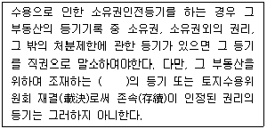
- 소유권
- 지역권
- 지상권
- 저당권
(정답률: 32%)
91. 공간정보의 구축 및 관리 등에 관한 법률에서 규정된 용어의 정의로 틀린 것은?
- “경계”란 필지별로 경계점들을 곡선으로 연결하여 지적공부에 등록한 선을 말한다.
- “면적”이란 지적공부에 등록한 필지의 수평면상 넓이를 말한다.
- “신규등록”이란 새로 조성된 토지와 지적공부에 등록되어 있지 아니한 토지를 지적공부에 등록하는 것을 말한다.
- “축척변경”이란 지적도에 등록된 경계점의 정밀도를 높이기 위하여 작은 축척을 큰축척으로 변경하여 등록하는 것을 말한다.
(정답률: 59%)
92. 다음 중 지목변경에 해당하는 것은?
- 밭을 집터로 만드는 행위
- 밭의 흙을 파서 논으로 만드는 행위
- 산을 절토(切土)하여 대(垈)로 만드는 행위
- 지적공부상의 전(田)을 대(垈)로 변경하는 행위
(정답률: 55%)
93. 공간정보의 구축 및 관리 등에 관한 법령에 따른 지목에 관한 내용으로 틀린 것은?
- 산림 안에 야영장으로 활용하는 부지는 체육용지로 한다.
- 공장용지를 지적도면에 등록할 때에는 ‘장’으로 표기한다.
- 토지의 주된 용도에 따라 토지의 종류를 구분하여 지적공부에 등록한 것을 말한다.
- 1필지가 둘 이상의 용도로 활용되는 경우에는 주된 용도에 따라 지목을 설정한다.
(정답률: 58%)
94. 공간정보의 구축 및 관리 등에 관한 법령상 임야대장에 등록하는 1필지 최소면적 단위는? (단, 지적도의 축척이 600분의 1인 지역과 경계점좌표등록부에 등록하는 지역의 토지 면적은 제외한다.)
- 0.1 제곱미터
- 1 제곱미터
- 10 제곱미터
- 100 제곱미터
(정답률: 43%)
95. 경위의 측량방법에 따른 지적삼각점의 관측과 계산 기준으로 틀린 것은?
- 관측은 10초독 이상의 경위의를 사용한다.
- 수평각 관측은 3대회의 방향관측법에 따른다.
- 수평각의 측각공차에서 1방향각의 공차는 40초 이내로 한다.
- 수평각의 측각공차에서 1측회의 폐색공차는 ±30초 이내로 한다.
(정답률: 53%)
96. 도로명주소법상 “도로명주소안내시설”에 해당하지 않는 것은?
- 도로명판
- 건물번호판
- 지역번호판
- 지역안내판
(정답률: 27%)
97. 지적업무처리규정상 현지측량방법에 대한 내용으로 틀린 것은?
- 지적측량을 완료한 때에는 반드시 측량결과도에 측정점 위치설명도를 작성하여야 한다.
- 전자평판측량에 따른 세부측량은 지적기준점을 기준으로 실시하여야 하며 면적측량은 전산처리 방법에 따른다.
- 지적측량수행자가 지적공부의 표지에 잘못이 있음을 발견한 때에는 지체없이 지적소관청에 문서로 통보하여야 한다.
- 지적확정측량지구 안에서 지적측량을 하고자 할 경우에는 종전에 실시한 지적확정측량성과를 참고하여 성과를 결정하여야 한다.
(정답률: 28%)
98. 기존의 경계점과표등록부를 갖춰 두는 지역의 경계점에 접속하여 경위의 측량방법 등으로 지적확정측량을 하는 경우 동일한 경계점의 측량성과가 서로 경우에는 어떻게 하여야 하는가?
- 경계점의 측량성과 차이가 0.15m 이내이면 확정측량성과에 따른다.
- 경계점의 측량성과 치악 0.15m 초과이면 확정측량성과에 따른다.
- 경계점의 측량성과 차이가 0.10m 이내이면 경계점좌표등록부에 따른다.
- 경계점의 측량성과 차이가 0.10m 초과이면 경계점좌표등록부에 따른다.
(정답률: 52%)
99. 지적서고의 연중평균습도 기준으로 옳은 것은?
- 20±5퍼센트
- 30±5퍼센트
- 50±5퍼센트
- 65±5퍼센트
(정답률: 47%)
100. 정당한 사유 없이 지적측량 및 토지이동 조사에 필요한 토지등에의 출입 등을 방해하거나 거부한 자에 대한 조치로 옳은 것은?
- 300만원의 이하의 과태료
- 1년 이하의 징역 또는 1천만원 이하의 벌금
- 2년 이하의 징역 또는 2천만원 이하의 벌금
- 3년 이하의 징역 또는 3천만원 이아의 벌금
(정답률: 52%)